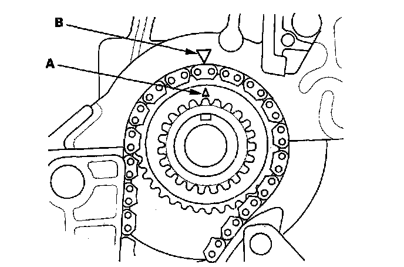
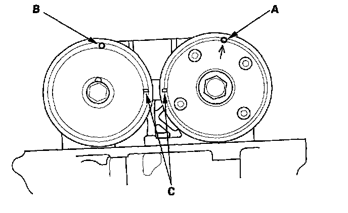
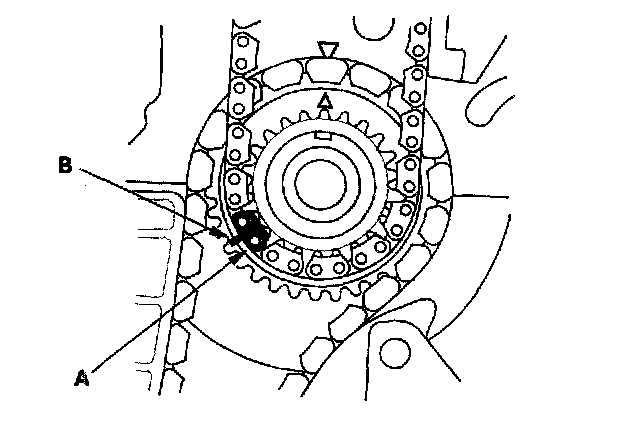
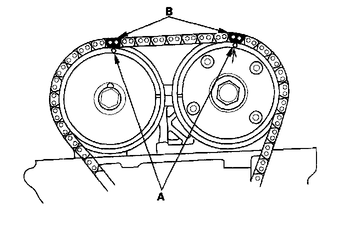

Timing Component Alignment Marks: Locations
Caution: Incorrect removal or installation of the timing chain can result in damage to internal engine components.



For complete Timing Chain Removal and Installation information, please refer to Timing Chain; Service and Repair.